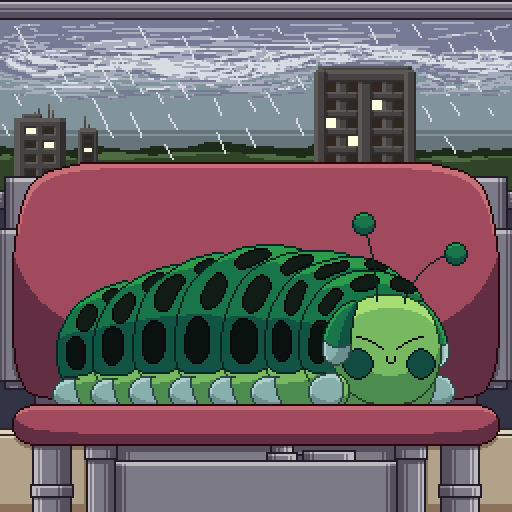

I'm a sophomore in CTD, and a web-surfing caterpillar.
I don't have much of a presence on the Internet right now, and I hope that having a personal website will help me change that in a way I feel comfortable with. My heart lies in my projects, and my mood is quite variable. I prefer identifying without the human element wherever possible, and enjoy the simple pleasure of getting creative.
Thankfully, there's a page that already exists which can help with telling you how I identify. But, long story short, they/them, minimal honorifics, and absolutely zero idea what I'm attracted to. Also high-functioning autism on top of that.